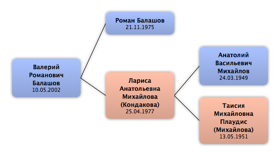

Домой
Домой
 Люди
Люди
 Семьи
Семьи
 Источники
Источники
 Диаграммы
Диаграммы
 Статистика
Статистика
Валерий Романович Балашов

Контекст

Родители
| Отец | Дата рождения | Мать | Дата рождения |
|---|---|---|---|
|
Роман Балашов
|
21.11.1975 |
 Лариса Анатольевна Михайлова Лариса Анатольевна Михайлова
|
25.04.1977 |
Родители и дети
| Партнёры | Дата рождения | Дети |
|---|
События
| Тип события | Дата | Место | Описание |
|---|---|---|---|
| Рождение | 10.05.2002 |
Факты
Медиа
Примечание
Источники
Родство
| Имя | Степень родства | Дата рождения | Место рождения | Дата смерти | Место смерти |
|---|---|---|---|---|---|
| Родителей | |||||
| Отец | 21.11.1975 | Ленинград, СССР | |||
| Мать | 25.04.1977 | Ленинград, СССР | |||
| Дедушки и бабушки | |||||
| Дедушка | 24.03.1949 | СССР | |||
| Бабушка | 13.05.1951 | Ленинград, СССР | 07.01.2009 | Санкт-Петербург, Россия | |
| Прадедушка и прабабушка | |||||
| Прадедушка | |||||
| Прабабушка | |||||
| Прадедушка | 21.01.1916 | 10.1989 | Бокситогорск, Ленинградская обл, Россия | ||
| Прабабушка | 15.11.1918 | Ефимовский пос., Ленинградская обл, Россия | 03.2001 | Ефимовский пос., Ленинградская обл, Россия | |
| Пра-прадедушка и пра-прабабушка | |||||
| Пра-прабабушка | 1953 | ||||
| Пра-прадедушка | 1953 | ||||
| Пра-прадедушка | |||||
| Пра-прабабушка | 1887 | ||||
| Тёти и дяди | |||||
| Тётя | 11.02.1974 | Ленинград, СССР | |||
| Двоюродные дедушки и двоюродные бабушки | |||||
| Двоюродный дедушка | 27.09.1939 | 1989 | |||
| Двоюродный дедушка | 1942 | ||||
| Двоюродный дедушка | 05.10.1946 | ||||
| Двоюродная бабушка | 4.06.1948 | Ефимовский пос., Ленинградская обл, СССР | |||
| Двоюродная бабушка | 06.01.1951 | ||||
| Двоюродная бабушка | 03.1953 | Ефимовский пос., Ленинградская обл, СССР | 03.2009 | ||
| Двоюродный дедушка | 1953 | ||||
| Двоюродный дедушка | 08.1955 | ||||
| Двоюродная бабушка | 30.06.1956 | Ефимовский пос., Ленинградская обл, СССР | |||
| Двоюродная бабушка | 08.1957 | ||||
| Тёти и дяди жены(мужа) | |||||
| Дядя (по браку) | 22.02.1965 | Ленинград, СССР | |||
| Двоюродные братья и сёстры | |||||
| Двоюродный брат | 15.07.1995 | Санкт-Петербург, Россия | |||
| Дальние родственники | |||||
| Троюродная сестра | 17.05.1993 | ||||
| Троюродная сестра | 06.01.2003 | ||||
| Другие родственники | |||||
| Двоюродный дядя | 1968 | ||||
| Двоюродная тётя | 06.12.1969 | ||||
| Двоюродная тётя | 14.05.1971 | ||||
| Двоюродная тётя | 08.12.1972 | ||||
| Двоюродная тётя | 06.01.1975 | ||||
| Двоюродный дядя | 1975 | ||||
| Двоюродный дядя | 10.1975 | 2002 | |||
| Двоюродная тётя | 1976 | ||||
| Двоюродная тётя | 1977 | 1997 | |||
| Двоюродный дядя | 1978 | 1998 | |||
| Двоюродный дядя | 26.01.1979 | ||||
| Двоюродная тётя | 10.1980 | ||||
| Двоюродная тётя | 1982 | 2005 | |||
| Двоюродный дядя | 30.08.1983 | ||||
| Двоюродный дядя | 08.1985 | ||||